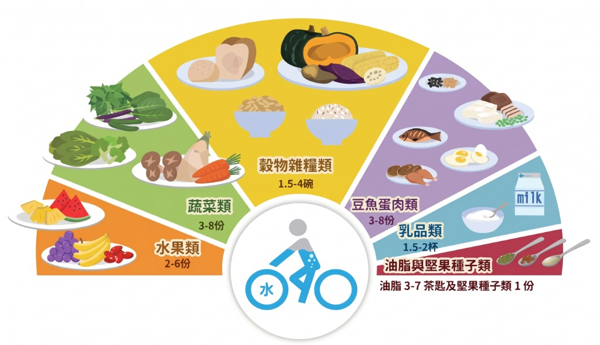

| 個案姓名 / 暱稱 | 必填 | |
| 病歷號 / 編號 | 編號 | |
| 生理性別 | 男 / 女 | |
| 年齡 | 歲 | |
| 實際身高 (BH) | cm (公分) | |
| 實際體重 (BW) | kg (公斤) | |
| 理想體重 (IBW) | 63.58 | kg (公斤) |
| BMI = BW / BH² | 23.53 | 體重正常 (理想) |
| 體重佔理想體重比 (IBW%) | 107 % | 正常 90~110% |
| 正常體重範圍 (BMI 18.5~24) |
53.5 ~ 69.4 kg | 標準區間 |
點選下方數值按鈕，可直接快速帶入上方目標熱量
| BEE 基本熱量 (HB公式) | 1644 kcal |
| 活動因子 (Activity) | |
| 壓力因子 (Stress) | |
| TDEE 每日熱量需求 |
2137 kcal
|
| 推估項目 | 測量輸入數值 | 推估結果 | 操作狀態 | 推估公式說明 |
|---|---|---|---|---|
| 腎功能評估 (eGFR) CKD-EPI / MDRD |
mg/dL
|
98.5 ml/min | 正常 | 2021 CKD-EPI 公式：依性別、年齡及肌酸酐精準估算腎絲球過濾率 |
| 膝長推估身高 (Chumlea) 臥床/駝背者身高估算 |
cm
|
164.0 cm | Chumlea 公式：男 64.19 - (0.04×年齡) + (2.02×膝長) / 女 84.88 - (0.24×年齡) + (1.83×膝長) | |
| 尺骨長推估身高 (Ulna) 手肘彎曲量測至手腕骨 |
cm
|
168.0 cm | 依 MUST 臨床營養篩檢指引尺骨長與身高對照換算標準 | |
| 圈度推估體重 (Chumlea) 無法站立量秤體重之推估 |
cm
cm
|
65.2 kg | Chumlea 圈度估算法：結合膝長、小腿圍、臂圍及肩胛下皮褶綜合估算 |
| 三大營養素 | 目標總熱量 | × | 百分比 (%) | 熱量百分比建議 | = | 克數計算過程 | 目標克數 (g) | 快速套用預設 |
|---|---|---|---|---|---|---|---|---|
| 🍚 醣類 (碳水化合物) | kcal | × |
%
|
50~60% | = | 1000 ÷ 4 = 250.0 g | 250.0 g | |
| 🥑 脂質 (Lipids) | 2000 kcal | × |
%
|
20~30% | = | 600 ÷ 9 = 66.7 g | 66.7 g | |
| 🥩 蛋白質 (Protein) | 2000 kcal | × |
%
|
10~20% | = | 400 ÷ 4 = 100.0 g | 100.0 g | |
| 總計與檢核 | ||||||||
| 食物大類 | 每份三大營養素 (g) | 設計份數 | 各餐次分配份數 | 蛋白質 (g) | 脂肪 (g) | 醣類 (g) | 總熱量 (kcal) | ||||||||
|---|---|---|---|---|---|---|---|---|---|---|---|---|---|---|---|
| 蛋白質 (P) | 脂肪 (F) | 醣類 (C) | 熱量 (kcal) | 早 | 早點 | 午 | 午點 | 晚 | 晚點 | ||||||
| 三大營養素加總克數 | 65 | 43 | 187 | 1425 | |||||||||||
| 三大營養素百分比 | 18.6 % | 27.7 % | 53.6 % | 0 kcal | |||||||||||

| 配方品名 | 規格包裝 | 蛋白質 (g) | 脂肪 (g) | 醣類 (g) | 總熱量 (kcal) | 適用對象與臨床備註 |
|---|